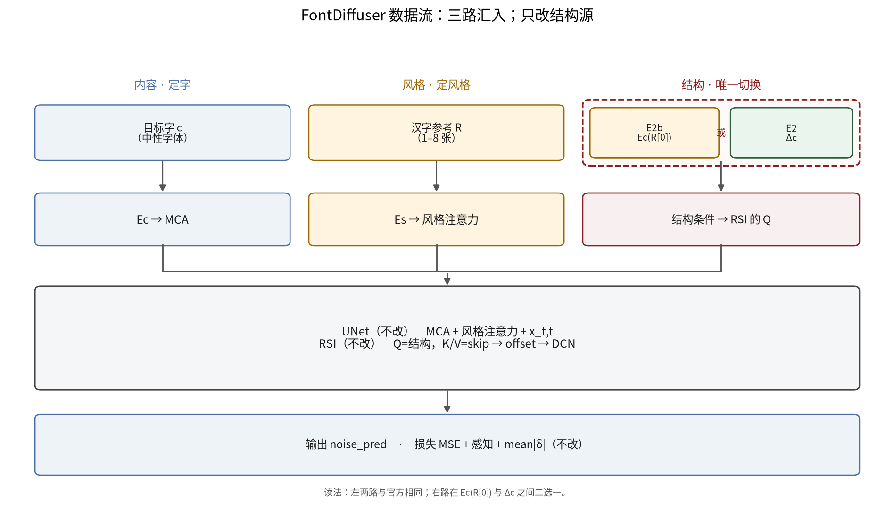
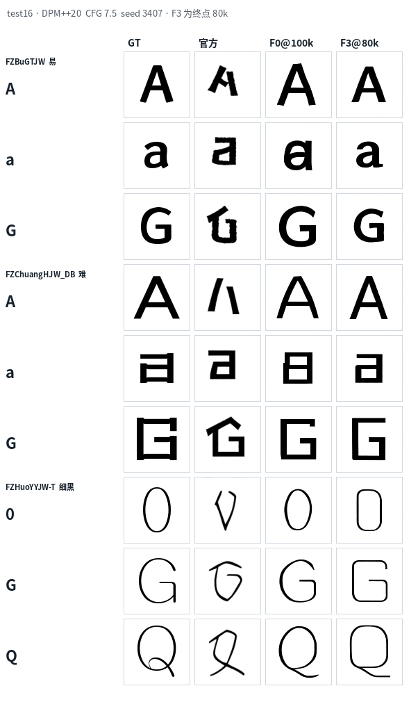
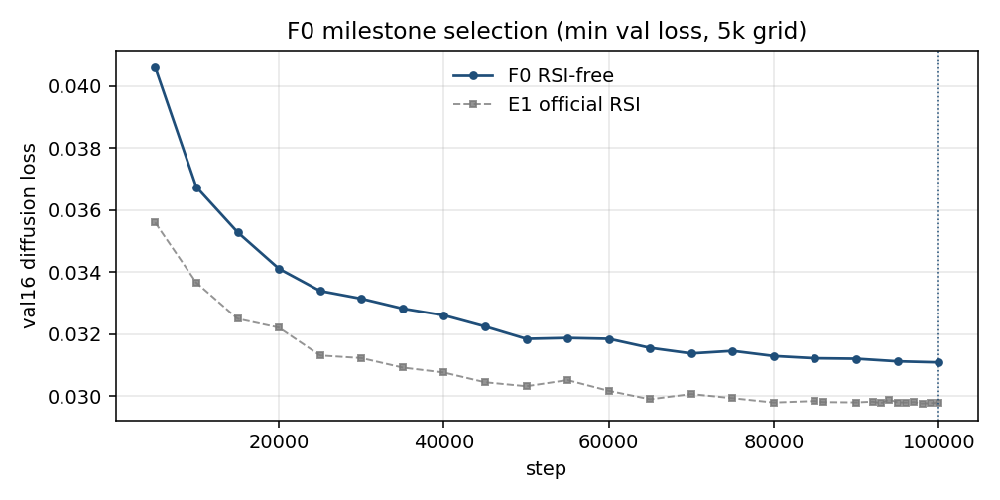
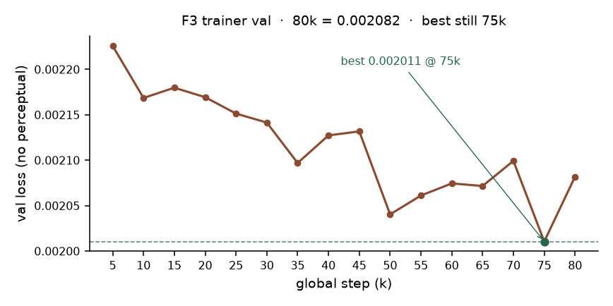
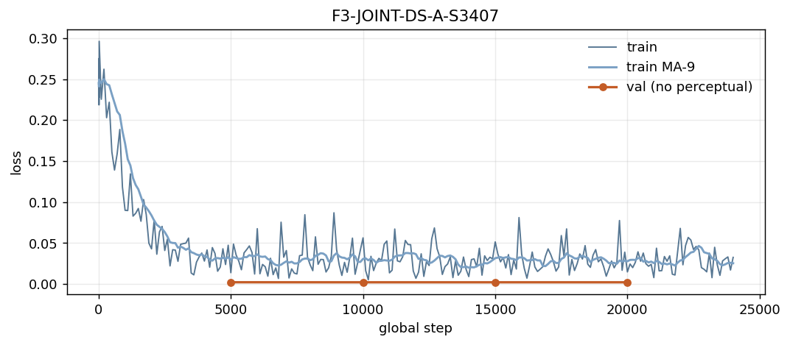

1. 实验状态（现在看这一张表）
| 实验 | 要回答的问题 | 状态 | 怎么看结果 |
|---|---|---|---|
| 数据协议 A | 260 套字体如何渲染成 96×96 训练图 | 完成 | 已冻结。每套字体统一字号、直接渲染、不插值。 |
| E1 | 官方 FD 在协议 A 上微调，能否写出目标字符 | 完成 100k | 能写，但风格和局部结构仍偏。未见测试字体上相对官方 P1：L1 0.104→0.069，SSIM 0.445→0.652，LPIPS 0.273→0.152。这是像素诊断，不是风格终局。 |
| F0 | 整段去掉 RSI 模块后，拉丁还是否汉字化 | 完成 100k | 会写出拉丁。val16 loss 0.031，选终点做父模型。实现见下节：是删模块，不是只关 loss。 |
| F3 | 在 F0 上挂 RSI，结构条件=Δ，再加同字体 Support×8 | 完成 80k | Trainer 验证最好 0.002011 @ 75k，终点 0.002082；与 F0 的 0.031 不可比。终点图 §3.2；5k 起偏方。 |
| F2 | 同 F3 但不开 Support（只开 Δ） | 在跑 ~23k / 80k | 用来拆「变方来自 Δ 还是 Support」。尚无 80k 效果可报。 |
| F1 | 同 F0 设定，但 RSI 结构条件改回官方（参考汉字 Ec） | 暂停 300 / 80k | 对照「官方 RSI vs Δ」。排在 F2 之后。 |
| E12 | 独立风格评测器能不能过自检门，才能给生成器打分 | 3/3 种子未过门 | T3/T4 大多能过；卡住的是 T2 AUC 门限 0.90（现约 0.73–0.80）。换了 26 套外部字体后 T2 略升，仍不够。在过门之前，不用它比较 F0/F3。 |
2. 方法：每条臂改了什么
FontDiffuser 用两张条件图：中性字体的目标字符指定「写哪个字」，目标字体的汉字参考指定「什么风格」。官方内部还有 RSI：按「结构条件」去推 skip 特征该怎么形变（offset → DeformConv）。

官方数据流。跨文字时，用汉字局部结构去扭拉丁，容易把字母画成汉字笔画。
| 臂 | 网络里有没有 RSI | RSI 读什么 | Support | offset 损失 |
|---|---|---|---|---|
| F0 | 没有：up-block 换成 StyleUpBlockNoRSI，参数级删掉 offset 解释器与 DeformConv |
— | 无 | 系数 0（且无模块可产生 offset；不是「模块还在、只关 loss」） |
| F1 | 有：在 F0 上新挂 identity-safe RSI（step 0 ≡ F0 前向） | 官方：查询字体第一个汉字参考的 Ec | 关 | 系数 0.5 |
| F2 | 同 F1 | Δ：train228 里汉字 Es → Top-10，再取邻居同一西文字的残差 | 关 | 0.5 |
| F3 | 同 F1 | 同 F2 的 Δ | 开：本字体 8 个汉字（不是检索结果） | 0.5 |
共享：协议 A、seed 3407、父模型 F0@100k（F1+）、lr 1e-5、warmup 5000、batch 8、80k 步（F0 为 100k）、source_drop=0.25。详表见仓库 reports/F123_STATUS_20260907.md。
UNet 主干与扩散损失形式不变；对照的是「有没有 RSI、结构条件从哪来、要不要 Support」。identity-safe：zero-conv 初始化，保证 F1/F2/F3 起点不扰动 F0。
3. 已经能看的效果
3.1 基线 E1：能写目标字，风格未完
图：未见测试字体。左到右一般为中性内容、汉字风格参考、真值、E1 生成。字符对了，风格和结构仍有偏差。
3.2 官方 vs F0@100k vs F3@80k（终点，同一协议）
test16 × 47 字（数字 / 拉丁大小写 / 扩展 / 平假名 / 片假名 / 注音），DPM++ 20 步，CFG 7.5，每条独立 set_seed(3407)。官方走 Content + Style「永」；F3 走训练条件 cache Δ + Support×8。共 2256 张。官方列的 L1/SSIM/LPIPS 与 E1 正式评测中的 P1 一致。
| 方法 | L1↓ | SSIM↑ | LPIPS↓ |
|---|---|---|---|
| 官方 P1 | 0.104 | 0.445 | 0.273 |
| F0@100k | 0.071 | 0.644 | 0.157 |
| F3@80k | 0.070 | 0.654 | 0.144 |
相对 GT 的像素诊断，不是风格主张。F3 整体略好；拉丁大写 F0 更好（L1 0.087 vs 0.094，SSIM 0.636 vs 0.610）。空白率均为 0。

上三行较容易的黑体；中三行难例（创黑体）；下三行细黑火样云 FZHuoYYJW-T 的 0/G/Q。官方列经常把拉丁收成汉字笔画；F0 与 F3 都已是拉丁。不要从这一张就下「F3 更好」的结论。

早期 4×5 探针（训练中途 checkpoint，不是全量）。全量 16 套 × 47 字见「分层评测」；F3 从 5k 到 80k 见「时间线」。
3.3 训练曲线（只说明「没崩」，不说明「更好」）

F0 验证 loss，选中 100k = 0.031。这条曲线可以用来选父模型。

F3 trainer 验证 loss，最好 0.002011 @ 75k，终点 80k = 0.002082。与 F0 的 0.031 不是同一指标，不能横比。

F3 训练 loss 在正常波动，RSI 增益从 0 缓慢上升，符合 identity-safe 头的预期。
3.4 F3 为什么会变方：时间线 + Δ 检索
时间线（16 套测试字体 × 16 个跨语种字符，checkpoint 5k–80k）：F3 往往从 刚过 warmup 的 5k 就比 GT / F0 更方，一直到 80k 几乎不再变。这不像「训到后面才漂」。
Δ 检索可以解释一条通道。检索只用汉字 Es，但灌进 RSI 的是邻居字体的同一个西文字。以 FZHuoYYJW-T 为例：Top-10 几乎全是极细/细黑体，权重约 0.10（最大余弦 0.997）；其中若干邻居的拉丁 0/G/Q 本身偏几何、偏方。Support×8 则是查询字体自己的汉字，汉字骨架也偏方。两条通道还没拆开——拆开要等 F2（只有 Δ）。
打开 F3 时间线 · 打开 Δ 检索诊断（16 套测试字体可切换，默认火样云）。
4. 评测器 E12：为什么还不能打分
计划是：用独立的风格编码器给「生成图像不像目标字体」打分，再拿它比较 F0 / F1 / F2 / F3。它必须先通过四项自检（门限预先写死，不允许事后放宽）：
| 种子 | T1 中位 ≥0.60 同字体跨字一致 | T2 AUC ≥0.90 跨字体可分 | T3 准确率 ≥0.90 字体分类 | T4 下降 ≥0.02 破坏后应掉分 | 过门 |
|---|---|---|---|---|---|
| v4 · 3407 | 0.729 过 | 0.791 不过 | 0.977 过 | 0.161 过 | 否 |
| v4 · 3408 | 0.773 过 | 0.795 不过 | 0.977 过 | 0.194 过 | 否 |
| v4 · 3409 | 0.533 不过 | 0.725 不过 | 0.977 过 | 0.126 过 | 否 |
v4 相对更早的 v3（Noto CJK 族内），换成 26 套开源外部字体、字符集也补全了。T2 略升，但离 0.90 仍远。T3 已经很高：评测器「认得字体」不难，难的是「跨字体风格可分」不够稳。在这项过门之前，主文不引用 E12 分数。
- 不要说 F3 已经优于 F0。像素上整体略好、大写拉丁 F0 更好；没有过门的风格分数。F1/F2 还没到 80k。
- 不要把 F3 的 0.002 和 F0 的 0.031 放在一起比。
- 不要把 E1 / F0 / F3 的 L1/SSIM/LPIPS 当成风格主张。
- 「变方来自 Top-10 拉丁」目前是可复核的机制假说，要用 F2 相对 F3 来拆 Δ vs Support，还不是定论。
- E2 / E2b 是更早的诊断跑，实现与现网 F123 不一致，不进入本页主张。
- F2 到 80k，写出 DONE，再续跑 F1。
- 同一 test16×47 协议比较 F1 / F2 / F3，拆开 Δ、Support 与官方 RSI。
- E12 的 T2 若仍过不了，风格打分方案要改，而不是放宽门限硬比生成器。
5. 若还想点开的页面
- F0 / F3 测试集分层评测（test16 × 47 字，官方 / F0@100k / F3@80k，已出完）
- F3 从 5k 到 80k 的变化
- Δ 检索诊断（左汉字依据，右取回的西文）
- 仓库内离线总入口：
reports/collab_offline/index.html（克隆后用浏览器直接打开） - 配置与进度长文：
reports/F123_STATUS_20260907.md - 早期 4×5 探针（不代表全量）
- 训练看板
:8787（实时 step / loss；本页是给导师的静态摘要） - 上一份周报（9 月 5 日） — 数据协议与 E1 更细；其中 E2/E2b 状态已过时
- E1 正式评测浏览